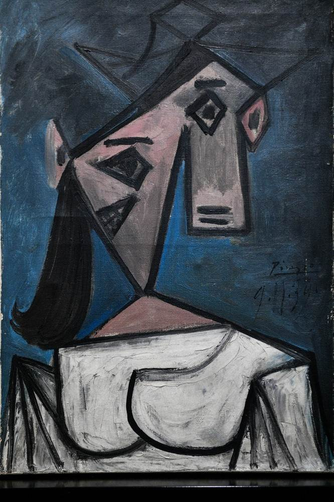
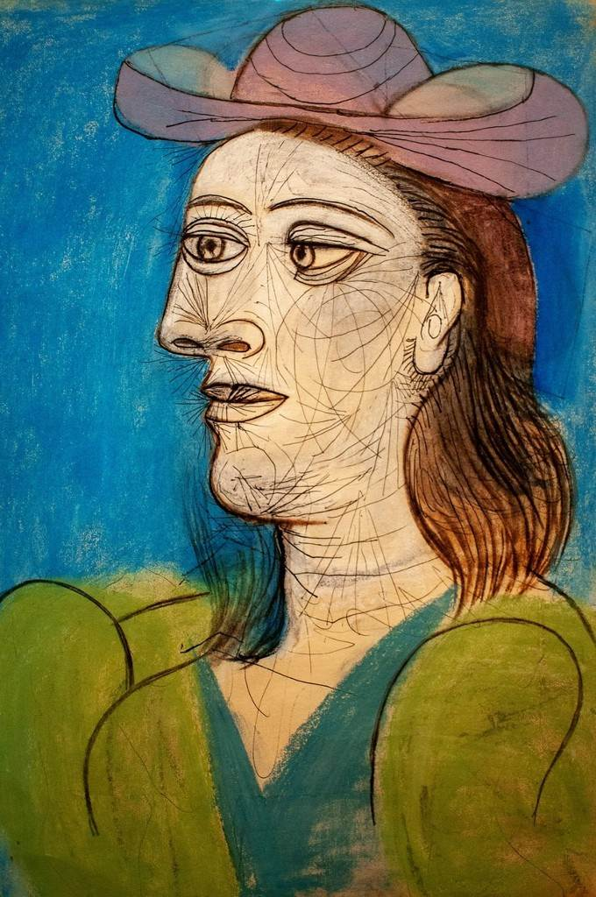
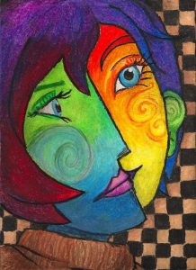
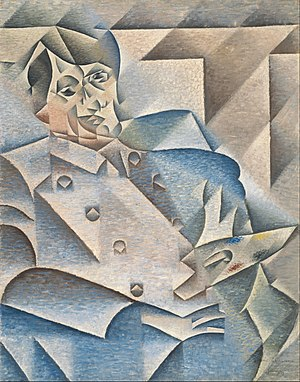
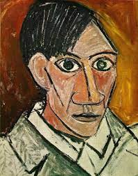

Njegova prva ljubavnica bila je Fernanda Olivier (ona je imala 18, on 23 godine). U Parizu, Pablo Picasso živi u siromašnoj četvrti na Monmartru, u hostelu u kojem su se nastanili ambiciozni umjetnici i gdje im Fernanda Olivier ponekad pozira. Tamo upoznaje Picassa, postaje njegov model i njegova djevojka. Ljubavnici su živeli u siromaštvu. Ujutro su ukrali kroasane i mlijeko. Postepeno, Picassove slike su počele da se kupuju.

Prava ljubav došla je do umjetnika 1917. godine, kada je upoznao jednu od balerina Sergeja Djagiljeva, Olgu Khokhlovu. Istorija njihove veze započela je 18. maja 1917. godine, kada je Olga plesala na premijeri baleta Parada u pozorištu Chatelet. Balet su kreirali Sergej Djagiljev, Erik Sati i Žan Kokto, dok je za kostime i scenografiju zaslužan Pablo Pikaso.

Godine 1927., kada je Picasso imao 46 godina, pobjegao je od Olge kod 17-godišnje Marie-Therese Walter. Bila je to vatra, misterija, ludilo.
Vrijeme ljubavi za Marie-Thérèse Walther bilo je posebno, kako u životu tako iu poslu. Radovi ovog perioda oštro su se razlikovali od prethodno nastalih slika i stilski i bojom. Remek djela iz perioda Marie Walther, posebno prije rođenja njegove kćeri, vrhunac su njegovog rada.

Umjetnik je brzo zaboravio ljubavnice koje je napustio. Ubrzo se već počeo sastajati sa 21-godišnjom Françoise Gilot, koja je gospodaru odgovarala kao unuka. Sreo sam je u restoranu i odmah je pozvao... da se okupa. U okupiranom Parizu topla voda je bila luksuz, a Pikaso je bio jedan od rijetkih koji je to mogao priuštiti.

Od 1902. Pablo Picasso je počeo pisati stilom koji je snažno izražavao teme starosti, smrti, siromaštva i tuge. Plave nijanse počele su prevladavati u umjetnikovoj paleti boja. Tokom ovog perioda, Pablo je slikao uglavnom slike nižih slojeva društva: alkoholičara, prostitutki, prosjaka i drugih ljudi.